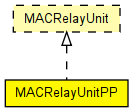

A MACRelayUnit implementation which models one CPU assigned to each incoming port, working with shared memory but separate queues.
It also models fixed delay for precessing each frame. Finite memory is taken into account by dropping frames if total number of bits enqueued exceed a given limit.
A simple scheme for sending PAUSE frames is built in (although users will probably change it). When the buffer level goes above a high watermark, PAUSE frames are sent on all ports. The watermark and the pause time is configurable; use zero values to disable the PAUSE feature.
The following diagram shows usage relationships between types. Unresolved types are missing from the diagram. Click here to see the full picture.
The following diagram shows inheritance relationships for this type. Unresolved types are missing from the diagram. Click here to see the full picture.
| Name | Type | Default value | Description |
|---|---|---|---|
| addressTableFile | string | "" |
see MACRelayUnit |
| addressTableSize | int | 100 |
see MACRelayUnit |
| agingTime | double | 120s |
see MACRelayUnit |
| processingTime | double | 0s |
processing time of one frame |
| bufferSize | int | 1MB |
memory |
| highWatermark | int | 512KB |
buffer usage threshold to send PAUSE frame |
| pauseUnits | int | 300 |
time to put in PAUSE frames (in units of 512 bit times) |
| Name | Value | Description |
|---|---|---|
| display | i=block/switch |
| Name | Direction | Size | Description |
|---|---|---|---|
| lowerLayerIn [ ] | input | ||
| lowerLayerOut [ ] | output |
// // A MACRelayUnit implementation which models one CPU assigned to each // incoming port, working with shared memory but separate queues. // // It also models fixed delay for precessing each frame. // Finite memory is taken into account by dropping frames if // total number of bits enqueued exceed a given limit. // // A simple scheme for sending PAUSE frames is built in (although // users will probably change it). When the buffer level goes // above a high watermark, PAUSE frames are sent on all ports. // The watermark and the pause time is configurable; use zero // values to disable the PAUSE feature. // simple MACRelayUnitPP like MACRelayUnit { parameters: string addressTableFile = default(""); // see MACRelayUnit int addressTableSize = default(100); // see MACRelayUnit double agingTime @unit("s") = default(120s); // see MACRelayUnit double processingTime @unit("s") = default(0s); // processing time of one frame int bufferSize @unit("B") = default(1MB); // memory int highWatermark @unit("B") = default(512KB); // buffer usage threshold to send PAUSE frame int pauseUnits = default(300); // time to put in PAUSE frames (in units of 512 bit times) @display("i=block/switch"); gates: input lowerLayerIn[] @labels(EtherFrame); output lowerLayerOut[] @labels(EtherFrame); }